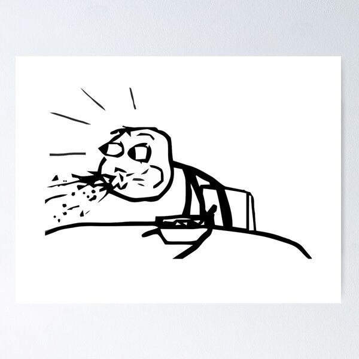

Case study · Personal product · Live
THOOK
A citizen campaign about public spitting in India — funny on the surface, serious underneath. Six pages, a reporting flow, and a PWA you can install like an app.

Status: Live personal campaign at /thook/ — not a client deliverable. Shame the habit, never the person.
Problem
Public spitting is everywhere and nobody counts it. A campaign that photographs people becomes harassment. The product had to map stains, not citizens.
What I built
- Six-page campaign site
- Report flow + Wall of Stains
- PWA, offline, no login
- Poster downloads (Thook Gyaan)
Current state
- Live on GitHub Pages
- Local reports in the browser
- Optional Node API for a shared wall
All THOOK pages
My role
Product, copy, and full front-end — including the reporting app, wall, and PWA. The voice is Hinglish and blunt on purpose so people remember it; the rule is still one: photograph the stain, never a face or a plate.
Why this matters for hire
Shows I can ship a multi-page civic product with a clear ethic, not only brochure sites: forms, local persistence, installable PWA, and a campaign that has to stay legally and socially careful.
Stack & process
Static HTML/CSS/JS in web/, GitHub Actions → Pages. Optional Node server for a shared wall. Claude / Cursor for speed; I own the tone, the no-person rule, and launch.